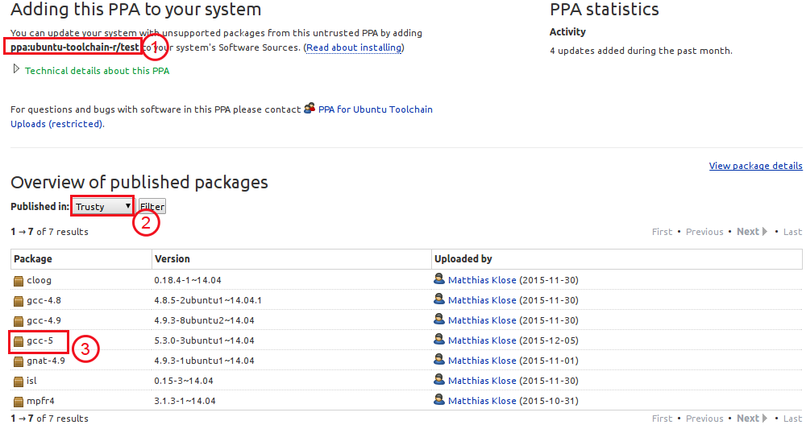
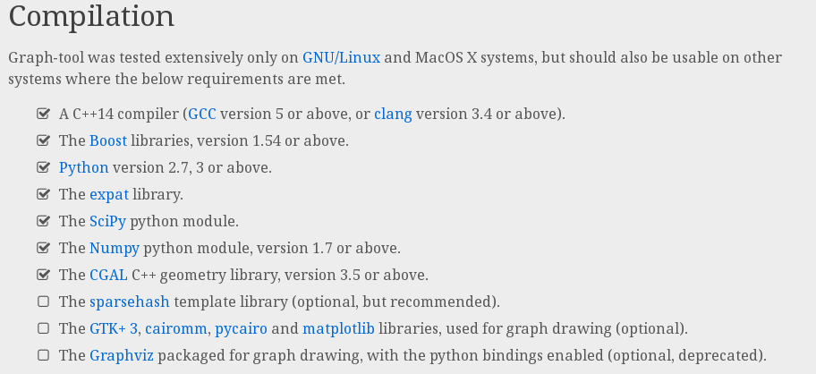

1.升级GCC和G++
在官网下载并解压(也可以到我的网盘下载:http://pan.baidu.com/s/1mib8NaC),
进入源码目录尝试configure发现提示如下错误:
configure: error: *** A compiler with support for C++14 language features is required.
因此需要首先升级一下GCC与G++,通过查看Ubuntu工具链说明页面,
最后找到了PPA页面,
其PPA是ppa:ubuntu-toolchain-r/test,如下图所示,最新版本是5:

然后就很简单了:
add-apt-repository ppa:ubuntu-toolchain-r/test
apt-get update
apt-get install gcc-5 g++-5
#接下来这两句建立软连接
ln -s /usr/bin/gcc-5 /usr/bin/gcc -f
ln -s /usr/bin/g++-5 /usr/bin/g++ -f
安装完成后可以使用gcc -v和g++ -v来查看版本.
2.安装依赖项和辅助工具
接下来安装各种依赖项,如下图所示,依赖项有一堆:

安装依赖项各种出错,解决问题花费了半个下午,不过最终还是搞定:
- 安装libboost
apt-get install libboost-all-dev
- 安装expat
源码下载地址,解压并进入源码目录
./configure && make && make install
- 安装scipy(参考:http://www.scipy.org/install.html)
apt-get install python-numpy python-scipy python-matplotlib ipython ipython-notebook python-pandas python-sympy python-nose
- 安装CGAL
apt-get install libcgal-dev libcgal-demo
- 安装GTK3和Graphviz
apt-get install gtk+3 graphviz
- 安装cairom
apt-get install python-cairo libcairomm-1.0-dev python-cairo-dev
- 安装sparsehash
apt-get install libsparsehash-dev sparsehash
- 一些可能用到的辅助工具
apt-get install vpx-tools mencoder
然后再graph_tool目录执行如下命令生成makefile:
./configure --with-sparsehash-prefix=/usr/include/google/
这里对于不同的平台配置可能不一样,你需要定位到的目录应该包含如下文件:
/usr/include/google
├── dense_hash_map
├── dense_hash_set
├── sparsehash
│ ├── densehashtable.h
│ ├── hashtable-common.h
│ ├── libc_allocator_with_realloc.h
│ ├── sparseconfig.h
│ └── sparsehashtable.h
├── sparse_hash_map
├── sparse_hash_set
├── sparsetable
└── type_traits.h
搜索dense_hash_set的位置即可.然后开始编译并安装:
make
make install
顺便说一下,编译非常耗时,大约两三个小时.
3.测试
#! /usr/bin/env python
# -*- coding: utf-8 -*-
from graph_tool.all import *
from numpy.random import *
import sys, os, os.path
import cairo
seed(42)
seed_rng(42)
# We need some Gtk and gobject functions
from gi.repository import Gtk, Gdk, GdkPixbuf, GObject
# We will use the karate-club network
g = collection.data["karate"]
pos = g.vp["pos"] # layout positions
# We will filter out vertices which are in the "Recovered" state, by masking
# them using a property map.
removed = g.new_vertex_property("bool")
# SIRS dynamics parameters:
x = 0.001 # spontaneous outbreak probability
r = 0.1 # I->R probability
s = 0.01 # R->S probability
# (Note that the S->I transition happens simultaneously for every vertex with a
# probability equal to the fraction of non-recovered neighbours which are
# infected.)
S = 0
I = 1
R = 2
# Initialize all vertices to the S state
state = g.new_vertex_property("int")
state.a = S
# Images used to draw the nodes. They need to be loaded as cairo surfaces.
Simg = cairo.ImageSurface.create_from_png("face-grin.png")
Simg_fear = cairo.ImageSurface.create_from_png("face-surprise.png")
Iimg = cairo.ImageSurface.create_from_png("zombie.png")
vertex_sfcs = g.new_vertex_property("object")
for v in g.vertices():
vertex_sfcs[v] = Simg
# Newly infected nodes will be highlighted in red
newly_infected = g.new_vertex_property("bool")
# If True, the frames will be dumped to disk as images.
offscreen = sys.argv[1] == "offscreen" if len(sys.argv) > 1 else False
max_count = 500
if offscreen and not os.path.exists("./frames"):
os.mkdir("./frames")
# This creates a GTK+ window with the initial graph layout
if not offscreen:
win = GraphWindow(g, pos, geometry=(500, 400),
vertex_size=42,
vertex_anchor=0,
edge_color=[0.6, 0.6, 0.6, 1],
edge_sloppy=True,
vertex_surface=vertex_sfcs,
vertex_halo=newly_infected,
vertex_halo_size=1.2,
vertex_halo_color=[0.8, 0, 0, 0.6])
else:
count = 0
win = Gtk.OffscreenWindow()
win.set_default_size(500, 400)
win.graph = GraphWidget(g, pos,
vertex_size=42,
vertex_anchor=0,
edge_sloppy=True,
edge_color=[0.6, 0.6, 0.6, 1],
vertex_surface=vertex_sfcs,
vertex_halo=newly_infected,
vertex_halo_color=[0.8, 0, 0, 0.6])
win.add(win.graph)
# This function will be called repeatedly by the GTK+ main loop, and we use it
# to update the state according to the SIRS dynamics.
def update_state():
newly_infected.a = False
removed.a = False
# visit the nodes in random order
vs = list(g.vertices())
shuffle(vs)
for v in vs:
if state[v] == I:
if random() < r:
state[v] = R
elif state[v] == S:
if random() < x:
state[v] = I
else:
ns = list(v.out_neighbours())
if len(ns) > 0:
w = ns[randint(0, len(ns))] # choose a random neighbour
if state[w] == I:
state[v] = I
newly_infected[v] = True
elif random() < s:
state[v] = S
if state[v] == R:
removed[v] = True
if state[v] == S:
if I in [state[w] for w in v.out_neighbours()]:
vertex_sfcs[v] = Simg_fear
else:
vertex_sfcs[v] = Simg
else:
vertex_sfcs[v] = Iimg
# Filter out the recovered vertices
g.set_vertex_filter(removed, inverted=True)
# The following will force the re-drawing of the graph, and issue a
# re-drawing of the GTK window.
win.graph.regenerate_surface()
win.graph.queue_draw()
# if doing an offscreen animation, dump frame to disk
if offscreen:
global count
pixbuf = win.get_pixbuf()
pixbuf.savev(r'./frames/zombies%06d.png' % count, 'png', [], [])
if count > max_count:
sys.exit(0)
count += 1
# We need to return True so that the main loop will call this function more
# than once.
return True
# Bind the function above as an 'idle' callback.
cid = GObject.idle_add(update_state)
# We will give the user the ability to stop the program by closing the window.
win.connect("delete_event", Gtk.main_quit)
# Actually show the window, and start the main loop.
win.show_all()
Gtk.main()
保存为animation_zombies.py,然后使用命令python animation_zombies.py即可运行,此时会弹出一个窗口,动态显示.
你当然也可以将其制作为视频,你需要安装ffmpeg,见下一节.转化为视频的命令如下:
#将帧文件保存到当前目录的frames文件夹
python animation_zombies.py offscreen
#生成zombies.webm文件
ffmpeg -i frames/zombies%6d.png zombies.webm
效果如下:
4.编译ffmpeg
1).下载源代码,地址:https://ffmpeg.org/download.html
2).安装依赖项:apt-get install libbs2b-dev libvpx-dev libwavpack-dev libwebp-dev
3).进入源码目录,生成makefile:
./configure --prefix=/usr/local/ffmpeg \
--enable-gpl --enable-version3 --enable-nonfree --enable-shared --enable-gray --enable-incompatible-libav-abi \
--enable-avisynth --enable-fontconfig --enable-gcrypt --enable-gmp --enable-gnutls \
--enable-libbs2b --enable-libvpx \
--enable-libwavpack --enable-libwebp --enable-libx264
4).编译并安装: make && make install
编译大约花费30~40分钟.将会安装到/usr/local/ffmpeg.
5).设置动态链接库
vim /etc/ld.so.conf,在最后一行加入:/usr/local/ffmpeg/lib,然后执行ldconfig.
6).设置环境变量
bash用户:vim /etc/profile,zsh用户:vim ~/.zshrc,打开后再末尾加入以下内容:
FFMPEG=/usr/local/ffmpeg
export PATH=${PATH}:$FFMPEG/bin
7).立即启用环境变量
bash用户执行source /etc/profile,对于zsh shell,执行: source ~/.zshrc
8).查看版本信息: ffmpeg -version
ffmpeg version 3.0.1 Copyright (c) 2000-2016 the FFmpeg developers
built with gcc 5.3.0 (Ubuntu 5.3.0-3ubuntu1~14.04) 20151204
configuration: --prefix=/usr/local/ffmpeg --enable-gpl --enable-version3 --enable-nonfree
--enable-shared --enable-gray --enable-incompatible-libav-abi --enable-avisynth
--enable-fontconfig --enable-gcrypt --enable-gmp --enable-gnutls --enable-libbs2b
--enable-libvpx --enable-libwavpack --enable-libwebp --enable-libx264
libavutil 55. 17.103 / 55. 17.103
libavcodec 57. 24.102 / 57. 24.102
libavformat 57. 25.100 / 57. 25.100
libavdevice 57. 0.101 / 57. 0.101
libavfilter 6. 31.100 / 6. 31.100
libswscale 4. 0.100 / 4. 0.100
libswresample 2. 0.101 / 2. 0.101
libpostproc 54. 0.100 / 54. 0.100